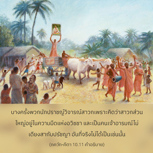
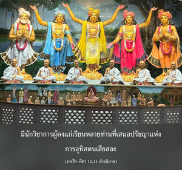

เพื่อแสดงพระเมตตาธิคุณพิเศษ ข้าผู้ประทับอยู่ภายในหัวใจของพวกเขา ทำลายความมืดที่เกิดจากอวิชชาด้วยประทีปแห่งความรู้ที่สว่างไสว


เมื่อองค์ ไจตนฺย ทรงประทับอยู่ที่เมืองพาราณสีได้ทำการเผยแพร่การสวดภาวนา หเร กฺฤษฺณ หเร กฺฤษฺณ กฺฤษฺณ กฺฤษฺณ หเร หเร หเร ราม หเร ราม ราม ราม หเร หเร คนเป็นพันๆติดตามพระองค์ ปฺรกาศานนฺท สรสฺวตี นักวิชาการผู้คงแก่เรียนและมีอิทธิพลมากที่เมืองพาราณสีในขณะนั้นเยาะเย้ย ไจตนฺย ว่าเป็นคนเจ้าอารมณ์ บางครั้งพวกนักปราชญ์วิจารณ์สาวกเพราะคิดว่าสาวกส่วนใหญ่อยู่ในความมืดแห่งอวิชชา และเป็นคนเจ้าอารมณ์ไม่เดียงสากับปรัชญา อันที่จริงไม่ได้เป็นเช่นนั้น มีนักวิชาการผู้คงแก่เรียนหลายท่านที่เสนอปรัชญาแห่งการอุทิศตนเสียสละ แต่ถึงแม้ว่าสาวกไม่ฉวยประโยชน์จากวรรณกรรมเหล่านี้หรือจากพระอาจารย์ทิพย์หากมีความจริงใจในการอุทิศตนเสียสละรับใช้องค์กฺฤษฺณจะทรงช่วยจากภายในหัวใจ ดังนั้นสาวกผู้มีความจริงใจปฏิบัติในกฺฤษฺณจิตสำนึกเป็นไปไม่ได้ที่จะไม่มีความรู้คุณสมบัติเพียงประการเดียวก็คือต้องปฏิบัติการอุทิศตนเสียสละรับใช้ในกฺฤษฺณจิตสำนึกอย่างเต็มที่
พวกนักปราชญ์สมัยปัจจุบันคิดว่าหากไม่สามารถแยกแยะจะไม่สามารถมีความรู้ที่บริสุทธิ์ สำหรับพวกนี้องค์ภควานฺทรงให้คำตอบ ดังนี้พวกที่ปฏิบัติการอุทิศตนเสียสละรับใช้อย่างบริสุทธิ์ถึงแม้ว่าไม่มีการศึกษาเพียงพอและไม่มีความรู้ในหลักธรรมพระเวทอย่างเพียงพอ องค์ภควานฺจะทรงช่วยพวกเขาดังที่ได้กล่าวไว้ในโศลกนี้
พระองค์ตรัสต่อ อรฺชุน ว่าโดยพื้นฐานแล้วนั้นเป็นไปไม่ได้ที่เราจะเข้าใจสัจธรรมสูงสุดบุคลิกภาพแห่งพระเจ้าด้วยการคาดคะเน เพราะว่าสัจธรรมสูงสุดนั้นยิ่งใหญ่มากจนเป็นไปไม่ได้ที่จะเข้าใจองค์กฺฤษฺณ หรือบรรลุถึงพระองค์ด้วยความพยายามทางจิตใจ มนุษย์สามารถคาดคะเนเป็นเวลาหลายต่อหลายล้านปีหากไม่อุทิศตนเสียสละ และหากไม่มาเป็นที่รักของสัจธรรมสูงสุดจะไม่มีวันเข้าใจองค์กฺฤษฺณ หรือสัจธรรมสูงสุดได้ ด้วยการอุทิศตนเสียสละรับใช้เท่านั้นที่สัจธรรมสูงสุดองค์กฺฤษฺณจะทรงชื่นชมยินดี และด้วยพลังอำนาจที่มองไม่เห็นของพระองค์จะทรงเปิดเผยพระวรกายที่ดวงใจของสาวกผู้บริสุทธิ์ สาวกผู้บริสุทธิ์จะมีองค์กฺฤษฺณอยู่ภายในหัวใจเสมอ และจากการปรากฏขององค์กฺฤษฺณซึ่งเหมือนกับดวงอาทิตย์ความมืดแห่งอวิชชาก็จะถูกขจัดไปในทันที นี่คือพระเมตตาธิคุณพิเศษที่องค์กฺฤษฺณทรงมีให้แก่สาวกผู้บริสุทธิ์
เนื่องมาจากมลภาวะแห่งการมาคบหาสมาคมทางวัตถุเป็นเวลาหลายต่อหลายล้านชาติ หัวใจของเราจึงถูกปกคลุมไปด้วยฝุ่นแห่งวัตถุนิยมอยู่เสมอ แต่เมื่อเราได้มาปฏิบัติการอุทิศตนเสียสละรับใช้และสวดภาวนา หเร กฺฤษฺณ อยู่เสมอ ฝุ่นเหล่านั้นจะถูกปัดให้สะอาดอย่างรวดเร็วแล้วเราจะเจริญก้าวหน้ามาสู่ระดับแห่งความรู้ที่บริสุทธิ์ จุดมุ่งหมายสูงสุดคือพระวิษฺณุซึ่งเราจะสามารถบรรลุได้ด้วยการสวดภาวนาและการอุทิศตนเสียสละรับใช้เท่านั้น ไม่ใช่ด้วยการคาดคะเนทางจิตใจหรือด้วยการโต้เถียงใดๆ สาวกผู้บริสุทธิ์ไม่ต้องวิตกกังวลเกี่ยวกับสิ่งจำเป็นทางวัตถุในชีวิต ไม่จำเป็นต้องกังวลเพราะเมื่อความมืดถูกขจัดออกไปจากหัวใจแล้วองค์ภควานฺจะทรงยินดีกับการอุทิศตนเสียสละรับใช้ของสาวกด้วยความรัก พระองค์จะทรงจัดสรรทุกสิ่งทุกอย่างให้โดยปริยาย นี่คือสาระสำคัญของคำสอนใน ภควัท-คีตา จากการศึกษา ภควัท-คีตา เราจะกลายเป็นดวงวิญญาณผู้ศิโรราบโดยดุษฎีต่อองค์ภควานฺและปฏิบัติการอุทิศตนเสียสละรับใช้ด้วยใจบริสุทธิ์ เมื่อพระองค์ทรงเข้ามาควบคุมแล้วเราจะเป็นอิสระจากความพยายามทางวัตถุทั้งปวงโดยสมบูรณ์